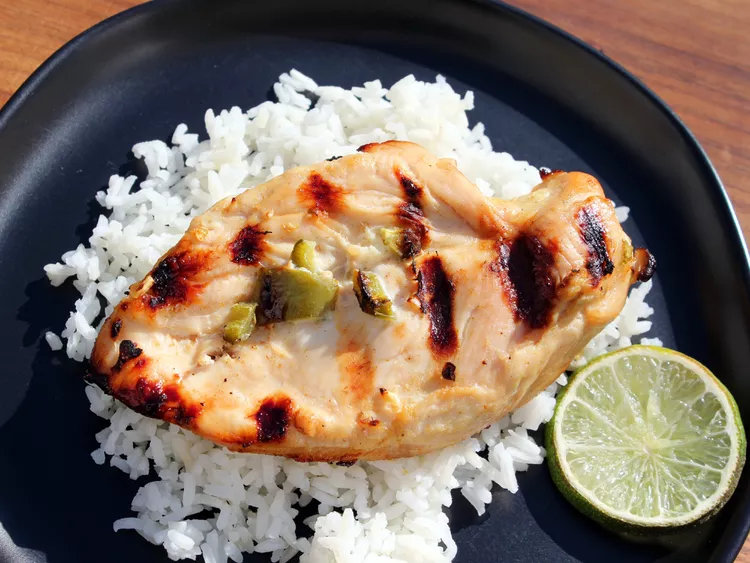

Jalapeno-lime Chicken

Description
This is a simple yet delicious recipe for a chicken dish. It's made with fresh
jalapenos, lime juice, and a spicy sauce. The combination of the ingredients
makes this dish a perfect addition to any meal.
Ingredients
- 1/2 cup orange juice
- 1/2 cup lime juice
- 1/2 teaspoon ground cumin
- 1/2 teaspoon minced garlic
- 2 jalapeno peppers, seeded and minced
- 4 skinless, boneless chicken breast halves
Steps
-
Whisk together the orange juice, lime juice, cumin, garlic, and jalapeno
pepper in a bowl; pour into a resealable plastic bag. Add the chicken
breasts, coat with the marinade, squeeze out excess air, and seal the bag.
Marinate in the refrigerator 2 to 4 hours.
-
Preheat the oven's broiler and set the oven rack about 6 inches from the
heat source. Remove the chicken from the marinade and shake off excess.
Discard the remaining marinade. Place the chicken on a broiling pan.
-
Broil the chicken breasts until no longer pink in the center and the
juices run clear, about 15 minutes. An instant-read thermometer
inserted into the center should read at least 165 degrees F (74 degrees C).
🍽️ Return to the
index page
.